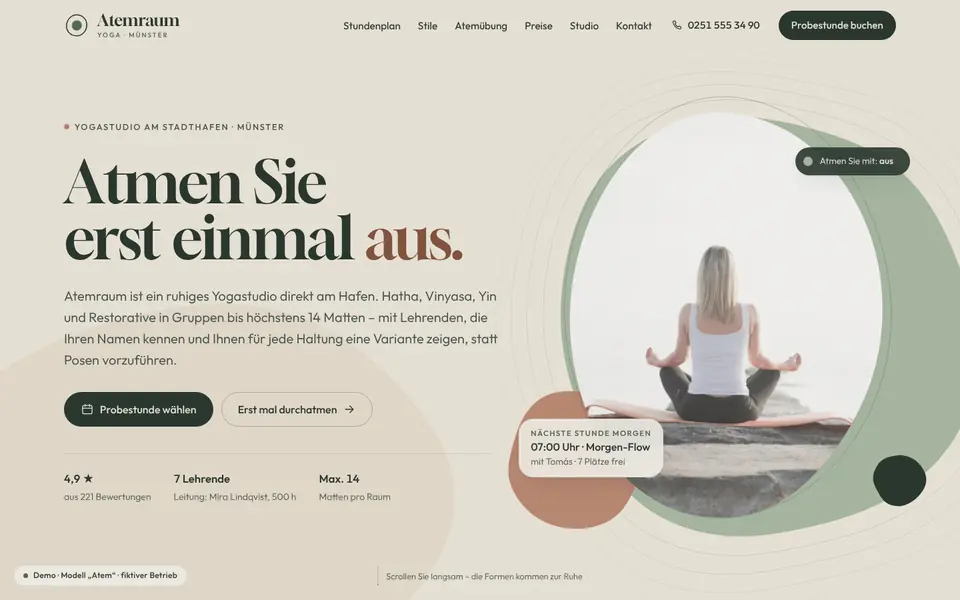
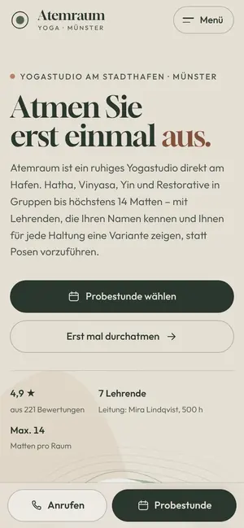

Case Study 23 / 30 · Sport & Wohlbefinden
Atemraum Yoga
Modell „Atem“
Organische Yogastudio-Seite im Atemrhythmus, mit Stil-Quiz, Stundenplan und geführter Atemübung.


Ausgangslage
Ein erfundenes Yogastudio am Stadthafen Münster mit Hatha, Vinyasa, Yin und Restorative. Wer neu ist, weiß oft nicht, welcher Stil passt, welche Stunde für den Einstieg taugt und ob sich eine Karte oder eine Mitgliedschaft lohnt. Die Seite soll diese Schwelle senken und die Ruhe des Studios schon beim Scrollen vermitteln.
Idee
Organisch, ruhig, geerdet: Salbei, Sand, Lehm und Waldgrün statt klinischem Weiß. Gloock bringt weiche Serifen in die Überschriften, Outfit bleibt im Text leicht. Blob-Masken ersetzen Rechtecke, eine feine Körnung liegt über der Seite, und alle Bewegungen folgen einem Atemrhythmus von vier Sekunden ein und sechs Sekunden aus – die Seite atmet mit.
Was die Seite kann
- Hero-CanvasFormen aus Perlin-Noise fließen und atmen im 4/6-Rhythmus, das Foto liegt in einer mitatmenden Maske, beim Scrollen kommen die Formen zur Ruhe.
- Geführte AtemübungBox-Atmung oder 4-7-8 wählbar, atmender Kreis mit Phasensegmenten, Countdown und Runden, optional ein leiser Ton per Web Audio.
- Stundenplan36 Stunden als Woche mit Filtern nach Stil, Level und Lehrenden, Heute-Markierung und Detail-Dialog mit freien Plätzen; eine Stunde lässt sich direkt anfragen.
- Stil-Quizvier gewichtete Fragen führen zu einem Stil mit Erklärung, Zweitempfehlung und passenden Terminen aus dem Plan.
- PreiseTabs für Probemonat, Zehnerkarte und Mitgliedschaft mit Ermäßigungs-Schalter, dazu ein Rechner, der nach Stunden pro Woche die Varianten vergleicht.
- Erste Stunde als gezeichneter Pfad, SVG-Karte mit Route, fixe Aktionsleiste auf dem Handy.
Dein Betrieb
So eine Seite für dich?
Schreib mir kurz, was du anbietest und was deine Website leisten soll. Du bekommst eine ehrliche Einschätzung, was sie kostet und was sie dir bringen kann.
Projekt anfragen